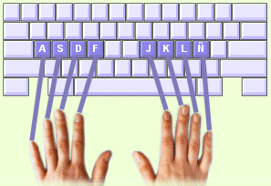

En la posición de partida, sus dedos descansan sobre la fila central del teclado - también llamada "fila principal". Desde la fila central se alcanza el resto de teclas.
Ahora sitúe sus dedos en la fila central:
1. Sitúe los dedos de su mano izquierda sobre las teclas A S D F (ver ilustración).
2. Sitúe los dedos de su mano derecha en las teclas J K L Ñ.
3. Deje caer ligeramente sus pulgares sobre la barra de Espacio.
4. Mantenga sus muñecas rectas y los dedos ligeramente flexionados.
¡Ayuda! ¿Nota los pequeños salientes en las teclas F y J? Están ahí para ayudarle a encontrar la fila central sin tener que mirar sus manos. |
 |